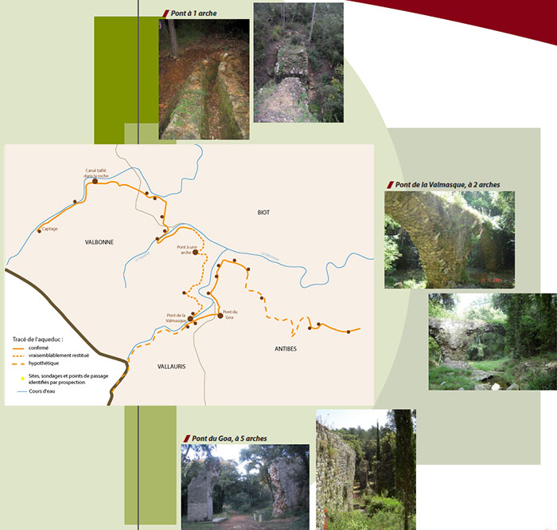

<!--<link href="../css/style.css" rel="stylesheet" type="text/css">-->
<link href="../css/style.css" rel="stylesheet" type="text/css" />
<meta http-equiv="Content-Type" content="text/html; charset=utf-8" />
<ion-view view-title="Accueil">
    <ion-content class="padding">
        <title>Les sites historiques - L'antiquité III</title>
<div class="list card">
  <p><b><span class="titre"><span class="titre">Les sites historiques</span></span></b><span class="titre"> - <strong class="titre">L'antiquité</strong></span><br />
  </p>
  <div class="fond-gris">
    <p><span class="rouge">Monument historique<br />
      Inscrit le 25.07.1936 (Pont du Goa - Antibes et Vallauris)<br />
      Inscrit le 25.07.1936 (Pont de la Valmasque - Vallauris et Valbonne)</span><br />
    </p>
    <p><span class="gras">VALLAURIS, VALBONNE, BIOT, ANTIBES</span><br />
      • L’aqueduc d’Antipolis dit de «la Bouillide»<br />
      Selon les sources écrites, l’antique cité d’Antipolis était desservie par 3 aqueducs, dont 2 sont attestés sur le terrain : Fontvieille et la Bouillide. C’est celui de la Bouillide qui est présenté ici. Il a récemment été l’objet d’une étude complète et richement documentée par les chercheurs du CNRS. Il concerne quatre communes Antibes, Vallauris, Biot et Valbonne. Long de 16 km, son tracé est bien identifi é par les historiens et de nombreuses portions ont été mises au jour. Si les débuts de Sophia ont détruit quelques tronçons très limités, son aménagement a permis l’étude de l’ouvrage et sa sauvegarde. Par rapport à notre territoire actuel deux secteurs sont distincts : la portion de Sophia à l’échangeur d’Antibes Ouest, constituée d’entités géographiques collinaires la mieux conservée, et la portion descendant sur Antibes centre via la route de Saint-Claude. Dans ce second secteur, Antibes, il a été détruit (de 90 à 99%) par l’urbanisation et seuls quelques éléments attestent de son existence :<br />
      - le haut de voûte apparaît dans un jardin privé, <br />
      - le canal apparaît dans une paroi rocheuse taillée pour une résidence, - dans une maison du Haut-Castelet (centre d’Antibes) on peut voir un bloc de concrétion.</p>
    <p>En revanche du premier tronçon, il demeure des éléments remarquables.<br />
      Sa localisation dans le parc de Sophia Antipolis facilite l’accès à de nombreux vestiges.</p>
    <p>Citons les éléments principaux :<br />
      - le canal taillé dans la roche (Valbonne) : le canal romain, dont la voûte a disparu, est bien visible ;<br />
      - le pont à 1 arche (Valbonne), malheureusement eff ondré conserve néanmoins une partie du canal aérien<br />
      - le pont de la Valmasque (Valbonne et Vallauris), à 2 arches est le seul à ne pas être écroulé ; à sa sortie se situe le raccordement avec la branche de la Valmasque (branche peu prospectée à ce jour),<br />
      - le pont du Goa (Vallauris et Antibes), enjambe le Goa qui devait être un grand cours d’eau vu la largeur du vallon et son débit à chaque crue, pont à 5 arches dont il ne reste debout que les culées en amont et en aval et la base de la pile I et la pile IV.<br />
    La durée d’utilisation avoisinerait les 160 à 180 ans mais ces informations peuvent être remises en cause par d’autres découvertes. Aux vues de certains détails architecturaux la construction daterait de la fi n du Ier siècle ou du début du IIe après J.-C.).</p></div>
  <div class="div_100"></div>

</div>
        </ion-content>
</ion-view>
        